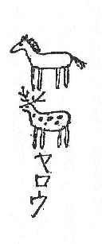

| ノンシャラン道中記 03 謝肉祭の支那服 ――地中海避寒地の巻―― | |
| 久生 十蘭 | |
| (2012) | |
ノンシャラン道中記
謝肉祭の支那服 ――地中海避寒地の巻――
久生十蘭
一、誦
するはこれ極楽浄土の歌。一九二九年二月十日、巴黎
なる里昂
停車場を発したる地中海行特急
第七九五号列車は、蒼味をおびた夜空に金色の火花を吹き散らしながら、いまや、アルルの近郊
に近い平坦な野原に朦朧とたたずむ橄欖
の矮林
のそばを轟々
たる疾駆を続けてゆく。
とある隔室
の中を差し覗けば、豆電気を一つだけ点
した混沌たる紫色の薄明りの中に、赤い筒帽を冠ったアルジェリの帰休士官、加特力
の僧侶の長い数珠
、英吉利
人の大外套、手籠を持った馬耳塞
人――それぞれクッションのバネの滑
かな動揺につれて、ひっきりなしに飛びあがりながら眠りこけているうちに、漫然と介在した若い男女の東洋人、これもまたはなはだ不可解な姿勢をたもちながら、前後不覚に眠っている様子。
男子なる方は、卅一二歳とも十七八歳とも見える曖昧しごくな発達をした顔の半面に、蒙古風の顴骨を小高く露出させ、身近に置かれたるマルセイユ人の手籠の編目へ鼻の先を突っ込んで睡眠しているのは、多分その中にしかるべき滋養物でも嗅ぎつけたからでもあろうか。かたわらなるは、十七八歳の令嬢ふうの美婦人、座席の上に横坐りして絹靴下の蹠
を広く一般に公開し、荷物棚から真田紐
でつるした一個二法
の貸し枕に河童頭
をもたらせ、すやすやと熟睡する相好は、さながら動物図鑑の揷画
に描ける海狸
もかくやと思われるばかり、世にも愛らしき眺めであった。
さて、昨年師走
の上旬、風光るニースに至る一〇〇八粁
を縦走旅行するため不可思議なる自動車に乗じて巴黎
を出発したコン吉氏ならびにタヌキ嬢は、途中予期せざる事件勃発したるにより、予定の十分の一にもたらぬ里程において目的を放棄し、薄暮
、コオト・ドオル県ボオヌ駅より列車にて碧瑠璃海岸
へ向けて出発したが、図らざりき、列車の取捨を誤ったため、同夜半ふと目覚めれば、身は再び巴黎
なる里昂
停車場において発見いたしました、という目もあてられぬ惨状、日ごろ筋違いに立腹する傾向のあるタヌキ嬢は、ここにおいておおいに激昂し、「ニースなんぞ、いやなこった！」と、宣言したにより、やむなくコン吉は、氷雨窓
を濡らす巴黎
の料亭において七面鳥と牡蠣
を喰
い、小麦粉にて手製したるすいとん
のごとき雑煮を、薄寒き棟割長屋
の一室にて祝うことになったが、コン吉たるもの、風光明媚
、風暖かに碧波躍
る、碧瑠璃海岸
の春光をはるかに思いやって鬱々
として楽しまず、一日、左のごとき意味なき一詩を賦
して感懐をもらしたのは、
Autant de pluie autant de tristesse, Paris qui m'oppresse!
Fermons les yeux, Rêvons au printemps de Riviera,
Aux figuiers qui mûriront, au vent qui passera,
A l'odeur du soleil sur les lavandes douces.
さりながら念仏往生義にも、説くごとく、心に戒行を持って一向専念せば、いずれの弘願ぞ円満せざらん。ここに一念発起したコン吉が、詩神
の大威業力に依願し、前掲の拙劣なる短詩をコントラ・バスの伴奏にのせ、日ごと毎日わびしげに独唱するところ、凡夫の悲願、タヌキ菩薩もあわれと思召
し給いけむ二月上旬のとある天気晴朗の朝、避寒ならびにコン吉の脳神経に栄養を与えるため、地中海沿岸の遊楽地へ向けて再度出発することに決定、けだしコン吉が手籠の編目に、三昧の鼻の先を突っ込んで寝こけているのは、いまや大願成就して、欣求
の南方極楽浄土
におもむくその途中にほかならぬ。
二、問うに落ちて語るに落ちぬ絵入りの禅問答。どこやらで「馬耳塞聖舎婁
」と呼ぶうるさい声々、赤帽
を呼ぶ口笛と鼓沓然鞄
を昇降場
に投げ出す音、ひっきりなしに開けられる窓から吹き込む冷たい風......誰れやらの手で不意に触られて、吃驚
して飛びあがったコン吉がキョロキョロと隔室
のなかを眺むれば、列車はもうよほど以前にマルセーユに到着したものとみえ、相客は一人残らず下車し、あとには泰然と眠るタヌと自分のただ二人、日ごろ小胆なるコン吉は、なんということなく心細くなって、
「モシ、モシ」と、タヌをゆすり起こすと、タヌは、寝ぼけがちなる眼瞼
をしばたたきながら、
「あら、また巴里なの」と、神秘的なことをいう。
「いや、ここはマルセーユです。しかしね、あまり寝ると今度は、伊太利
の方へ行ってしまうから、ここらで目を覚ましてはどうですか、それにしても夜がふけたとみえて、だいぶ冷えて来たから燃料補給のため、僕はこれから駅食堂
へ行ってサンドイッチでも買って来るつもりです。――そちらに何かご注文がありますか」
「熱いショコラを一杯買って来たまえ」
「ショコラを一杯。――もし熱くなかったらどうしますか？」
「機関車へ行って暖めていらっしゃい」
「はい、かしこまりました」と、コン吉が、扉を開けて廊下へ出ようとすると、その一尺ほどの扉の隙間から、凩
のようにひょろりと吹き込んで来た一着の銀鼠色
のモオニング。――黒琥珀
の袋に入れた長い折り畳み式釣竿のごときものを小脇にかかえ、大きな自動車用の塵
除け眼鏡をかけ、真紅
の靴下にズックの西班牙靴
をはいた異装の人物。いきなりむずとばかりに、窓ぎわの座席に坐ったと思うと、ポケットから「ラ・トリブーナ」という伊太利語の新聞を取り出し、顔の前にさかさに拡げて読み出したが、やがて「くだらん！」と叫んで新聞をもみくちゃにし、その玉を忌々
しそうに足で蹴っ飛ばした。
大きな眼鏡からはみ出した顔の部分は、雨あがりのセエヌ河の水のようなやや黄濁した色をし、削瘠
した顎
の先には、よく刈り込んだアルフォンス十三世式の白い三角髯がくっついていた。
コン吉とタヌがあっけにとられて眺めているうちに、やや遠くで錚々
と鳴る発車の電鈴
、車掌の呼び子、機関車がどしんと重く客車の緩衝機に突きあたったかと思うと、列車は滑
かに昇降場
をすべり出し、貨物倉庫や車輛のそばをすり抜け、分岐線をがたがたと飛び越えてから、汽笛一声、マルセーユの市街の胴なかに明けられた長い隧道
のなかへ走り込んだ。
アルフォンス十三世は、蒼白い長い指で顎
を押えながら、眼鏡の奥からじろじろ二人の様子を見ていたがややしばらくののち、気息
で曇った汽車の窓ガラスへ、指で次のような、象形文字を丹念に書きつけた。
鹿皮の爪磨きで爪を磨きながら、ゆうゆうと十三世の動作を観察していたタヌは、そこで、いきなり立ちあがって窓のそばまでゆき、せっかくの自由画を掌
で拭い取ってから、その右上へ、
と、書きつけて、軽蔑したように肩をぴくんとさせた。十三世はしばらく考えていたが、また立って行って、今度は、
と、書いて、何か問いたげに、タヌの顔をみつめた。タヌは、
「おや！ やったね」と東洋語をもって叫んでから

と書いたが、これでは、通じないと思い返したものか、また別に、
を書いて、十三世の頭蓋骨のあたりを指さしてみせた。十三世はまだ何か書きつけたいらしく、しきりに指先をなめずりながら窓を睨んでいたが、残念ながら、ガラスの黒板は、国旗や豚や渦巻きや馬で満員で、もう立錐の余地もなかった。これには十三世もはなはだ焦慮の体
であったが、何を思ったか今度は、引きちぎるようにチョッキの釦
をはずして胸を押しひろげるとワイシャツの胸には、野球選手の運動服のように、赤い心臓と次のような文字が刺繡
してあった。
三、貴人痴呆にして物の道理の分らぬこと。公爵を先に立てたコン吉とタヌは、南仏の海岸に名だたる、キャンヌの町からやや離れたポッカの真暗がりの野原を、足で探りながら一歩一歩と進んでゆく。
闇の中から突然姿を現わす怪物のような野生仙人掌
に胆
を冷し、人間よりも丈の高い、巨大な竜舌蘭
の葉の棘
に額を打ちつけながら、なおもそろそろと道なきに道を求めて漂流すること一刻
あまり、やがて、密生した西洋蘆
の奥の闇の中におぼろに白い姿をさらし、死せるがごとくに固く鎧戸
を閉ざした城のような一棟の建物の前にゆきあたった。公爵は甲高い声でカラカラ笑いながら、
「や、とうとうつかまえた、こんなところに隠れていたのか、仕様のない悪戯
っ子だぞ！ お前は！」と愛撫するように扉のあたりを軽打
した。「去年は、あっちのユウカリの樹のそばへつないでおいたのですがね、今年はこんなところへ逃げ出して来ている......ほら、ご覧なさい。ちゃんと鎖で結
えつけておくんですが、いつも鎖を引き切ってしまう」
なるほど、小庇
の下には、緑青の噴
いた古ぼけた鐘が吊されてあって、その中心から細い鎖が、枯草の中をはって、門の方へどこまでも続いている様子、時々夜の闇をなめるように旋回して来るアンチーブの灯台の、蒼白い光芒の中に浮び出すその荘館
というのは、※［＃「てへん＋夸」、37-下-12］
［＃「※［＃「てへん＋夸」、37-下-12］
」に傍点］門は崩れ鉄扉は錆び、前面の壁は頂銃眼
のあるあたりまで、猫蔦
の茂るにまかせた見るからにすさまじいさながらの廃墟、時刻はあたかも丑満刻
、万籟寂として滅し、聴えるものはホイホイというなにやら怪しい物音ばかり。コン吉は早や魂宙外、
「あの、ホイホイというのは何でしょう」と、震え声でたずねると、大公はしきりに扉の廻りを手探りしながら、
「あれはフィリップさんという梟
の夫婦。いま鳴いてるのは夫人
の方です」と、囁
くように答えた。「令嬢、この扉のそばに『水仙荘
』と彫りつけた標札があって、そのそばに呼び鈴があるはずですから、ちょっと探してみて下さい」
タヌは長い夜の探検に疲れたとみえ、草の上に踞
み込んでいたが声に応じて門のそばまで進み寄って、マッチをすり、手探りをしいろいろ工風を凝
しているふうだったが、間もなくすぐもどって来た。
「呼び鈴なんかなかったよ、それに、標札には『三匹の小猿荘
』と彫ってあるんだけど......」
「ほほう、それは奇妙です......でも水仙と猿なら大した違いではありませんね......それにしても呼び鈴がないとは......」と、じれったそうに掌
を擦
り合わしていたが、突然飛びあがるようにして、
「ああ、そうだ呼び鈴ではない、鐘をたたくのでした。では鐘をたたいてわれわれの到着を知らせましょう」といってジャン、ジャンと二度ばかり軽く鐘をたたいてから、何物かを期待するように腕組みした。しかし、門内はいぜんとしてひそまり返り、いつまで経っても一向人の出て来る気配もない。
氷のように冷たいアルプス颪
に、腹の底まで冷えあがったタヌは、そろそろ肝の虫を起こしたとみえ、ばたばた足踏みをしながら、
「もっと、ジャンジャン鳴らしましょうか」というのに、コン吉もその尾鰭
につき、
「誰れも出て来ませんが、鐘の音が聴えなかったのではないでしょうか」
「誰れにです」
「つまり、屋内
にいる人に」
「屋内
に人なんぞおりません」と、大公は自若。
四、天国に行きたければ小さな孔
より入るべし。およそ二三十も鍵のついた大きな鍵束を渡されたコン吉が、一つずつ鍵を扉のところへ押し付けてゴトゴトやっていたが、どれも大き過ぎるか小さ過ぎて合わない――もっとも合わないはずだというのは扉には始めから鍵穴なんかなかったのである。
「どの鍵も駄目です、合いません」
「なるほど、そんな事もあるかもしれない。錠前にだって、その日その日の気分というものがあるでしょうからね、横から入りましょう。さ、こちらへ！」と、一声、絶叫したかと思うと、公爵は飛鳥のように身を翻
して家の横について走りながら西洋蘆
の中へ消えてしまった。
「これは大変なことになった。せっかく公爵と別懇になって、この冬は碧瑠璃海岸
にふさわしい快適な生活ができると思ったのに、どうやらあの公爵の脳髄は大分混雑しているようだ。このままのめのめとあの人物の招待に応じていたらわれわれの身辺にまたもや意外な椿事
が起こるかもしれない、波瀾万丈は小説家の好むところだろうが、僕は元来、コントラ・バスの修業に仏蘭西へやって来たのだから、平和な生活の方が望ましい。どうだろう、幸い公爵は裏の方へ行ったようだから逃げ出すなら今のうちだと思うけど......」
西洋蘆
の繁みの奥の方をキョトキョトと偸視
しながら、コン吉がいうと、タヌは一向意に介しないふうで、
「頭の工合が悪いからこそ、こんな海岸へ養生に来たのよ、だいいち、コン吉にしたところが、同じ目的でやって来たのだから、願ってもない良い仲間
じゃないこと、もし幸い君の頭が、あのひとの頭より少しでもましなら、せいぜい看病してあげたまえ、それこそ同病相憐れむっていうものよ、なにしろ公爵は、大きな遊艇
や、すばらしい競馬馬
を持っているそうだから、この冬はずいぶん愉快に暮らせるに違いないわね。ともかく君が何んといってもあの人が話していた『竜の玉』ってのを一目見ないうちは帰らないつもりよ。さ、早く鞄を持ちたまえ、屋内
へ入りましょう。ぐずぐずしないで！」と、早や小走りに歩き出す。
コン吉はせんかた泣く泣く、大きな帽子箱と鞄とラケットを両手にさげ、とぼとぼとタヌのあとについて荘館
の横手に廻ってみると、大公におかせられては、いまや、欅
の大掛矢を振い勝手口の階段の横について、石炭を汲み入れる二尺四方ほどの鉄扉に対して大破壊を行なっている様子。
やがて、鉄扉は長らくの打撃にたえかねたとみえ、ぐゎらりと内部に落ち込んだ。様子見澄ました公爵は、おもむろにハンカチで指をぬぐってから、コン吉に、
「さ、どうぞお入り」と挨拶した。
コン吉が恐る恐る暗い孔
の中を覗いてみると、はるか七八尺も底の方に、硝子
の破片
のように尖ったものすごい塊炭が、ぞろりの牙をむいているのが見えたから、
「いいえどうぞ、ご主人から」と、懸命に辞退した。
「ご遠慮も時によりましょう。まずまずお通り下さい」
「でも、なんですか、この穴は少しちいさ過ぎると思うんですけど。......それに、多少不潔でもありますし......」
公爵は爪をかんで、しばらくコン吉の顔をみつめていたがやがて、
「なあに、いざこざはないさ」とつぶやきながら、壁に立て掛けてあった件
の細長い袋から、菩提樹
の杖に仕込
んだ、夜目
にもどきどきするような三稜
の細身の剣
を抜き出して、コン吉の鼻っ先へ突きつけ、さて「這え！」と、もの柔らかに命令した。
コン吉は吃驚
敗亡、何の否やもあらばこそ、仰せのごとくに四ん這いになると、引き続いて、
「穴に頭を突っ込め！ お尻をもたげて！」という厳命。されば、コン吉はお尻をもたげ、麒麟
が池へ水を飲みに来たような姿勢をとると、公爵は、その尻を、
「おう！」という掛け声もろとも、三稜剣
で横薙
ぎに引っぱたいたから、コン吉はたまらない、
「うわア！」と一声、悲痛な叫びを地上に残して逆落しに石炭孔
の闇の中へと消えうせた。
五、二月の空は南方
特有の深い紺碧に澄み渡る。ミモザと駝鳥の首のような、とぼけた竜舌蘭
の花が、今を盛りと咲き乱れるキャンヌの公園では、はや朝から陽気な軍楽隊
、エドゥアール七世の銅像の前を、テニス服を着て足早やに行くのは隣りの別荘の英吉利
娘。アルパカのタキシイドを着てひょっこり賭博場
から出て来たのは、多分昨夜、コン吉から、三十法
ばかり巻きあげたあの憎い玉廻し
であろう。
コン吉が石炭庫の石炭で手ひどくやられた、右足を軽く跛
にひきながら、公爵とタヌのあとに附きそって、ブウルガムの広場
をひょろめき下り、しかるのち、オテルサヴォイの露台
に坐り込んで、アルベエル・エドゥアールの突堤
に続く棕櫚散歩道
をおもむろに眺めるところ、行くさ来るさの市井雑爼は今日もまた寝巻的散歩服
の令嬢にあらざれば袖無寛衣
の夫人
、老いたるも若きも珍型異装を誇り顔に漫々然々
と練り歩く様子、異装にかけてはあえて人後に落ちざるタヌの身装
はとみてあれば、今日はまた一段と趣向を凝らしたとみえ、腰の廻りに荒目昆布のごときびらびら
のついた真紅
の水浴着
を一着におよび、クローム製の箍
太やかなるを七八個も右の手頸
にはめ込んだのは、間もなくこの席にて開催さるべき sporting club の茶話会に対する用意と見受けられた。
さて、少
しく精神に異状を呈したと思われる、フィンランドの公爵、モンド氏の古き館
に捕虜となったコン吉ならびにタヌのその後の朝夕は、直接の肉体的被害はすくなかったが、見る事聞くこととかく頓珍漢
なことばかり、一口にいえば、やや神秘的とも幻想的ともいえる雰囲気
の中に、ただ夢に夢見る心持、昨夜も夕景から「三匹の小猿荘
」の食堂において、聖
ジャンの祭日にちなんだ大饗宴があると披露されたにより、空腹
い腹をかかえ、食堂の長椅子にたぐまって片唾
をのむところ、薦延
数時間、ようやく十時真近になって、蓋付きのスウプ容
れと三人前の食器を、大いなる銀盆にのせて運び出して来た公爵、ルイ十五世ふうの卓
の上にそれを適当に配置してから、
「私
はこれから、次の肉皿
の仕度にかかりますから、もう少々お待ちを願いましょう」といって、脚の一本ない古風な翼琴
のそばへ行き、ものしずかにブラアムスの「子守歌」を弾き始めた。
「肉皿
には鶫
を差し上げようと思っているのですが、実はその鶫なるものはまだ糸杉
の頂
の巣の中で眠っているのです、なにしろね、鶫なんてやつは目覚
いからこうやって、子守歌でも聴かせて、ぐっすり眠らせておこうと思うのです」
子守歌は不可思議極まる装飾音の中で跳ね廻り、随所で奔放自在な転調
を行ないながらようやく最後の静止音までたどり着いた。
すると公爵は、上品な白髪
頭の真中を見せて一揖
し、
「ほどなく肉皿
も参りましょう。では紳士ならびにご令嬢、どうぞお席へ、前菜
でも始めることに致しましょう」と威儀を正して披露
した。
豊満な期待と共にセルヴェットを膝の上に拡げたコン吉が、白いセエヴル焼のスウプ容れの中をそっと覗いてみると、その中には、クレエムのかかった血のような赤い薔薇が三輪盛られてあった。
というわけ。
幻想的な方はまあまあそれでよろしいとして、さて、現実的な方は実に手のつけられないほどの被害があった、というのは、モンド大公は二人をば、日がな毎日、キャンヌの町中を引き廻し社交界に紹介するという名目のもとに、文学趣味の夫人に対しては（日本の最も著名なる小説家である）と紹介し、運動趣味の紳士には（これは日本から派遣されたゴルフの代表選手です、どうぞよろしくお引き廻しのほどを）と推薦し、有名なるキャンヌの賭博場
の経営者
、アンドレエ氏に対しては（この夫妻はバカラの名人ですよ、手を焼かないように用心なさい。なにしろ、東洋の魔法を心得ていられるのだからね）と人によりその日の気分によって、自由自在な紹介をするところから、コン吉は、いまやキャンヌにおいては、前述のもののほか、有名な天文学者であり、世界一流の馬術の名人であり、曲芸師――予言者――生花の先生――釣魚家
――コルネット吹き――映画の監督――発明家――陸軍砲兵少佐――油断のならぬ間諜......と、天
が下にありとある名流を一手に引き受け、キャンヌの社交界を向うに廻して、必死の格闘を続けることになったという次第。
されば公園のベンチでは見も知らぬ夫人に「近ごろ、お作の方はいかがですか」とか、突堤の鼻では老紳士に「沼で姫鱒
を釣りますには鋼鉄製の英国ふうの釣竿より、どうも日本
の胡麻竹の釣竿の方が......」とか思いもかけぬ訊問の奇襲にあうによって、コン吉の市中の散歩は、毎分毎秒、さながら薄氷を踏む思い。
今日この茶会
で「西洋蘆
市運動協会
」の会長を招待するというのは申すまでもなく、公爵が例の自在なる幻覚によって会長その人に、コン吉を紹介しようという計画に違いない。さてコン吉は、そもそも今日は水泳の選手になるのであろうか。飛行艇
の技師になるのであろうかと、しくしく痛む腰を撫でながら、されば戦々恟々
。
六、カランカランと鳴る鐘は旅館
や下宿
の昼餐の合図。あちらの正通り
、こちらの丘でそれが音色さまざまに触れ出すと、散歩道
をうろついていた Jupe-pyjama キャフェの派手な大日傘の下にいた Boléro さては海馬島の海馬のように砂浜に寝ころんでいた裸人種
に至るまで、渚から水がひくように一斉に風景の中から姿を消してしまう。飛入台付
、大筏
の上にいたスポオティング・クラブの面々も、口々に「いずれ後刻」といいながら、どぶん、どぶんと海に飛び込んで昼飯めがけて泳いで行ってしまった。筏
の上に残ったのは三人の半狂人、いうまでもなく、公爵、タヌならびにコン吉の組合せだけ。
籠手
をかざして眺むれば、キャンヌの町を囲むレステレエルの山の斜面の裾から頭頂
まで、無数に散在する粋で高尚な荘館
と別荘
――その間では、いまや霞のような巴旦杏
の花盛り、暖い太陽の下では枝もたわわに檸檬
が色づき、背景には雪の山頂をきらめかすアルプスの連峰、コルクと松の木の生えたサント・オノラの朱色の岩は、紫紺色の海にその容脚
を浸し、はるかなる水天一髪の海上には鷗
のごとくに浮ぶ一艘の三檣帆船
――さながら夢のようなる春景色、和
やかな日射しにほどよく暖められたコン吉の脳髄は、そろそろと睡気を催したとみえ、どうやら混沌たる状態になって来たので、
「どうもうっとりするほどいい心持ですね、見れば公爵も、筏の上で船を漕いでいられる様子、われわれもひとつ、今日は、社交も昼餐も抜きにして、ゆっくりとここで昼寝をしてはどうでしょう。これが社交疲れというのかして、掌
は痛むし、首筋は腫れるし、胃袋もどうやら紅茶臭くなっているようだ、その他の部分も少し休養させなくては護謨
が伸びてしまう」とコン吉がいうと、タヌも朦朧たる声で「ではね、そこへ（臨時休業）の札を出しておいてちょうだい、よく窓掛けを閉めてね」とぐるりと向うへ寝返りを打ったと思うと、はやすやすやと寝入ってしまった。
「社交なんぞ鱶
にでも喰われろ、公爵は腹がへったら、一人で陸
まで泳いで行くであろ。こっちはここで睡るばかり」四辺
関わぬ大欠伸
をしてから、筏の上に長くなって、鼾
をかき始めた。並々ならぬ筏の動揺と、ぞっとするほど冷たい波の潮沫
で驚いて眼を覚ましたコン吉がキョロキョロと、四辺
を眺めるところ、どうやら海上の風景が平素に比べてなんとなく単調な趣を呈しているというのは、筏は、陸
からそれをつないでおく太いロップを断ち切って泳ぎ出しいまやアンチーブの岬のはるか沖合を漂々閑々と漂っている様子。
あっと仰天したコン吉は、たちまち思慮分別を失い、
「やあ！ 難船だ、漂流だ！」と時化
にあった臘虎
船の船長のように、筏の上、地駄婆駄
とうろたえ廻ったが、いかにせん、筏はキャンヌの岸を離れることすでに四粁
余り、叫ぼうにも陸に声の届こうはずはなし、元来この筏なるものは、陸
真近につないで紳士淑女の飛び込みならびに休憩の用に供するために造られたものゆえ、櫓櫂
も帆もあろうはずはない、コン吉の狼狽には頓着なく筏は己
が好むにまかせてなおも自在に漂ってゆく。
コン吉の声に夢さまされたタヌはこれも意外な環境に驚き、
「あらま、大変ね、ずいぶん広いわね」と、眼をみはりながら「でもどうしてあのロップが切れたのかしら、ずいぶん丈夫そうな様子だったけど」というと、今まで寂然として顎
の三角髯をひねってた、公爵は、もの柔らかに、
「いや、綱は私
がといたのです、綱のせいではありません」と答えた。
「あらま、公爵！」
「どうしてまた！」と、コン吉とタヌが左右から詰め寄ると、公爵は波に戯れる鷗の群れを眼で追いながら、
「このへんには、海岸にそって幅の広い海流
がありますから、それに乗りさえすれば黙っててもニースまで行きますから心配なさることはありませんね」
「でもね、僕の荷物はみなキャンヌに置いてあるのですから、ちょっともどって持って来たいのです......つかぬ事を伺うようですが、やはりあっちへ帰る海流
っていうのもありましょうか、もし、ありましたらここらでちょいと乗り換えをして......」と、コン吉はなんとか公爵をなだめてキャンヌに引返そうという方寸、公爵はにべもなく、
「こうなった以上、あなた一人のために筏を始発駅にもどすというわけにはゆきませんね、いいじゃないですか、ニースへ行きましょう。明後日から、ニースでは有名な謝肉祭
が始まりますからね、率直に申しますと、この筏でニースの謝肉祭
を見物に行くのが私の希望なのです、自動車もいやなら、汽車もいや、飛行機、ヨット、馬、......みないやです。どうぞそう思っていただきたい」
ああ、またしても、公爵はそろそろ目の色を変え、口調もおいおい切り口上になってゆく様子、このうえ逆らうと、海になぞ投げ出されまいものでもない。タヌはしきりに「黙れ、黙れ」と、コン吉に眼で信号をする、ではもう諦めるより仕様がないのであろう。コン吉は心細い声で、
「大丈夫でしょうね、乗り越すことはないでしょうね」と、念を押すと、
「間違ったら、伊太利
へ行くまでです、それで駄目なら南米ネ」と、不興げに横を向いてしまった。
太陽はアルプスの巓を赤紫色に染めて、ようやくその向うへ沈もうとしている、漫々たる海面
は青色から濃い灰色に変り、はるかなるフレエジュの山の上に薄黒い雲が徂来するのは、多分今夜、西北風
でもってこのリヴィエラ一帯を吹き荒らそうとする風神
の前芸なのであろう。
七、ニース市の光栄、海上より貴人の一行到着さる。苦心惨憺
疲労困憊
、約十七八時間近くも荒天の海上を漂流したすえ、マルタ島から帰って来た牡蠣
船に拾われてニースの海岸に到着したのは翌日の午後四時ごろ、フィンランドの公爵と二人の上品な東洋人が、筏に乗ってニースの海岸に漂着したという事件は、目撃者には笑い話の種をあたえ、噂だけ聞いた庶民にははなはだ伝奇的
な興味と昂奮を感じさせた、そのうちでも優秀高雅なニースの社交界に最も感動を与えたのは、その日の「小ニース人
」の夕刊の「社交室」に掲載された次のような新聞記事であった。
本日午後四時四十五分ごろ、ニース市は、予期せざる光栄ある訪問を受けることになった。その貴賓とは、排水量六千噸
を有する軽巡洋艦のごとき遊艇
に搭乗して、カッシニ河岸に到着せられたる支那の王族張
氏夫妻、ならびにフィンランドのモンド大公爵である。一行は上陸後、最も完全なる静養をとるため、直ちにジョルジュクレマンソオ街なる平和病院
に入院された、ちなみに一行は北極探険よりの帰途なる由
八、虎を指して猫と呼ぶおたんちんぱれおろがす。気息掩々
たる三着の水浴着
が、オピタル・ド・ラ・ペエに運び込まれ、一様に39
度の一夜を明かしたその翌朝、一行は種々なる人士の光栄ある訪問を受けた。
まず劈頭に出現したのは、大きな花束を持った「小ニース人
」写真班であった、写真班の希望するところは「花束を持って笑った顔」の写真が一枚撮りたい、というのである。
さればコン吉とタヌは、水浴着
の胸に薔薇とミモザの花束をいだき、この世にある限りの「笑い顔」をして見せたが、写真班は、どれもこれも一向笑っているようには見えない、というのである。その後もいろいろと苦心経営したが、やがて、反対においおいと腹立たしくなって来たので、笑う方はやめにして普通の顔の前でマグネシュウムを焚いて勘弁してもらった。
公爵の方は、これはしきりにおおげさな身振りをし、笑った顔、威張った顔、泣いた顔と、数種の撮影を強要したが、この方は、多分始めっから取り枠の中に乾板がなかったのであろう。翌朝の新聞には、いずれの顔も掲載されていなかった。
その次の訪問者は、
ニース市謝肉祭企画委員
弁護士 フオル・ボロン
及び同夫人、同令嬢であった、フオル・ボロン氏は茴香酒
の匂いのする赤鼻の肥大漢、同夫人は猫背の近視眼、しかしながら、同令嬢はさながら二月の水仙のごとき、純白の広東縮緬
の客間着に銀の帯を〆め憧憬
に満ちたあどけない眼を見開きながら、希望の条々につき、綿々とコン吉をかき口説くのであった。
令嬢が希望する条項は、コン吉にとってははなはだ当惑千万、かたがた、多少ならず自尊心というものすら傷つけられる傾向があったので、コン吉にはコン吉の意見があるのである。がしかし菓子箱の蓋の三色版画の中にでもいるようなこの愛
ぐしき令嬢の願いを、当惑や自尊心だけで、拒絶していいものであろうか。いずれが是か、いずれが非か、これは、語るままに、令嬢に語らしめて、読者諸賢の判断を乞うよりほかに道はないのであろう、ともかく、この令嬢は、支那ほど神秘的で幻惑的で、そのうえさらに魅惑的な国は、この広い世界に、断じて二つとあるはずはない。
だから、クラブントの「光緒皇帝」はもちろんＡ氏の「支那の暗黒面」Ｂ氏の「上海
にて」Ｃ氏の「青竜刀と弁髪について」その他Ｄ氏、Ｅ氏、Ｆ氏、Ｇ氏と......みな再読したが、支那に関する書籍をよんでいる間は、吾身が吾身でないような説明のできぬ微妙な心持がする、というのである。
「ですから、あたし、今度の謝肉祭
には「支那の旅行
」という題の山車
を出したいと思うんですの、山車
のうえの飾り物を三つに区切って、右端は支那の子供が大勢ソラの花の下でダンスをしているところ、真中は五重の塔の中で、若い男の支那人が六絃琴
を弾いて、綺麗な令嬢
が歌を唄っているところ、左の端は青竜刀で罪人の首を斬っているところ......まあ、大体こんなふうなんですの、そいで子供も令嬢も昨日西貢
から着いた安南人
に頼むつもりなんですけど、この山車
の前に、どうしても、繩でしばられて先に立って行く支那の大官
がなければ気分が出ないと思うんですの、最初はね、お父さまにお願いするつもりだったんですけど、お父さまは、どうも気が進まないとおっしゃるんですの。それにこんな鼻の赤い支那人なんかありませんでしたわ、どの本にも！ なんといってもこの役は、本当の支那の方にやっていただくに越したことはありませんわね。ですから、本当に申し訳ないんですけど。......ぶしつけなんですけど......」
ボロン氏も猫背夫人も、思い余ったというふうに、
「申し訳ありませんが......ぶしつけですが......なにしろ娘が......いえ、なにその......」
と、ひたすら頼み入る、さすがのコン吉もここにおいて、憤然と蹶起
し、
「あの申し訳ありませんが、僕は支那人ではありません。日本です。どうもとんでもない話だ。だいいち......」と憤
り立ったが、令嬢は相変らず涼しげな眼をみはりながら、
「あら、ちっともかまいませんことよ」と、慰めるようにささやいた。コン吉は、ここで、寝床の上に起きあがり、「そもそも日本は万世一系の......」と日本の日本たる所以
を弁護しようとしかけたが――ああコン吉よ。諦めるがよろしい。一体何を証拠にしてコン吉が支那人にあらずして日本人であることをこの場で証明できるであろう。ああ、旅行券
！
しかし、その旅行券さえ「三匹の小猿荘
」の寝室の鞄の中にはいっているのである。
九、日本人が欧洲で活躍した一つの実例。マッセナの広場に陣取った、クロワゼットの国墨大隊の軍楽隊が一斉に「マルセーユ」を奏し始めた、ニース市を縦に貫く勝利大通り
に今年の「謝肉祭の王様
」がゆらぎ出したのだ。欧羅巴
に名だたる第四十六回目のニースの謝肉祭の幕はいま切って落されたのだ。大通りの両側には士農工商、貴縉
紳士、夫人令嬢老若童婢と、雲霞
のごとく蝟集する中をよろめき歩く貸椅子屋の老婆、行列
の番附
を触れ売りする若い衆、コンフェッチを鬻
ぐ娘など肩摩轂撃の大雑踏大混雑、行列
の先駆を務めるのは、長い喇叭
を持った凛々しき六人の騎士、その後に続くは白兎の毛で縁取りした、空色の天鵞絨
の長マントオを着、王冠を冠った「謝肉祭の女王
」いよいよ今年の大山車
「マダマンゴオの娘」が軋
り出せば、家の窓さては、屋根の上からも大山車
目がけて投げつけるコンフェッチの大吹雪。拍手に口笛――「三つの嘴
の鵞鳥」「マスコット」はそれぞれ趣向を凝らした大山車
がゆるぎ出しさて「巴里人の生活
」という最初の小山車
が通り過ぎると、その後から、胸に竜、背中にと、金糸銀糸で刺繡した長袍
を着、赤い緞子
の袴を穿いて現われて来たのはコン吉であった、西班牙
の海賊の扮装をした公爵に腰繩を打たれ、長い弁髪を朝風になぶらせながら、鬱々とした面持で、コンフェッチの吹雪の中を進んで行った。――広場のある方へ。
底本：「久生十蘭全集 Ⅵ」三一書房
１９７０（昭和45
）年4
月30
日第1
版第1
刷発行
１９７４（昭和49
）年6
月30
日第1
版第2
刷発行
初出：「新青年」
１９３４（昭和9
）年3
月号
※フランス語の詩に付けられたルビは、底本では、天に寄せて組まれています。
入力：tatsuki
校正：伊藤時也
２００９年10
月26
日作成
２０１０年11
月2
日修正
青空文庫作成ファイル：
このファイルは、インターネットの図書館、青空文庫（http://www.aozora.gr.jp/）で作られました。入力、校正、制作にあたったのは、ボランティアの皆さんです。